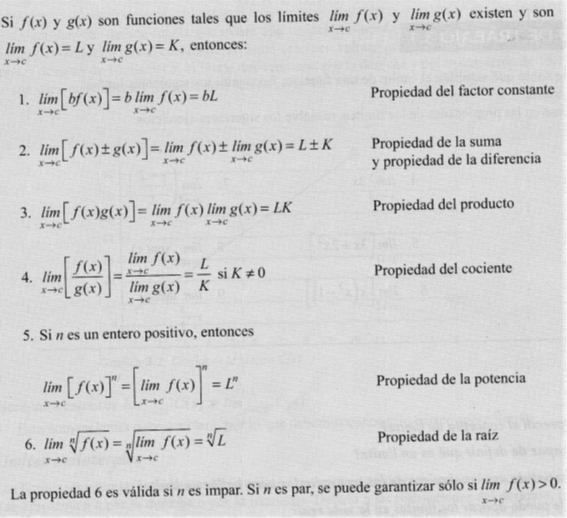

PRIMER BIMESTRE
Límite de una función
En el análisis, los conceptos de series covergentes, derivada e integral definida se fundamentan mediante el concepto de límite
En el cálculo este concepto se utiliza para definir los conceptos fundamentales de convergencia, continuidad, derivación entre otros.
Si bien, el concepto de límite parece intuitivamente relacionado con el concepto de distancia, en un espacio euclídeo, es la clase de conjuntos abiertos inducidos por dicha métrica, lo que permite definir rigurosamente la notación de límite

Si F(x) se acerca arbitrariamente a un número L cuando x se aproxima a c, entonces límite de f(x) se aproxima a L
limx-->cf(x)= L
Métodos:
Propiedades de los límites y límites especiales:
Propiedades:
- Propiedad de la función Constante.- El límite de una constante es igual
al valor de la constante.
limx-->cb= b
- Propiedad de la identidad:- El límite de una función identidad que se acerca c, es c.
limx-->cx= c
- Propiedad de la función potencia:- El límite de una variable elevada a un exponente cuando x se acerca a c, es c elevada a exponente.
limx-->cxn= cn
Propiedades de los límites Especiales

Límites laterales y Unilaterales
limx-->c+f(x)
- El límite por la izquierda significa x se aproxima a c tomando valores inferiores cada vez más cercanos a c y se denota po:
limx-->c-f(x)
limx-->c- f(x)=L=limx-->c-f(x)